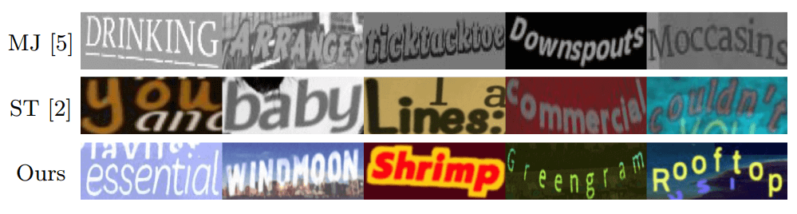
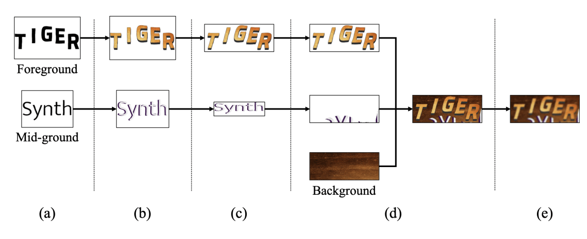
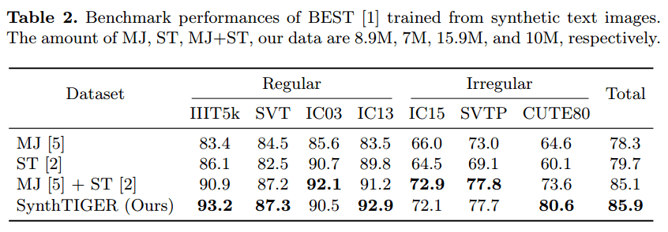
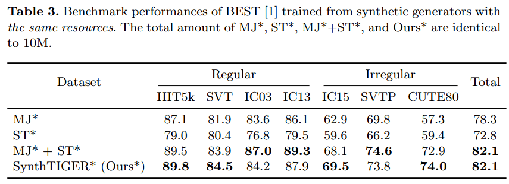
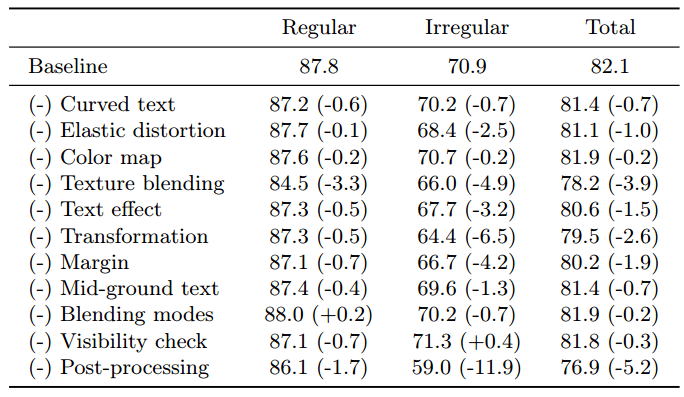
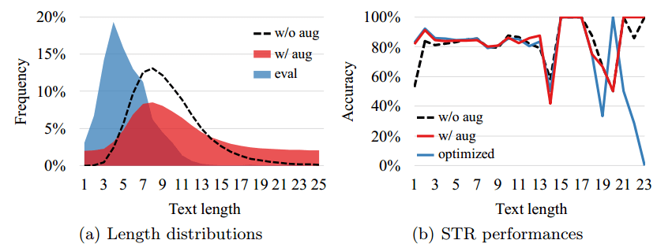
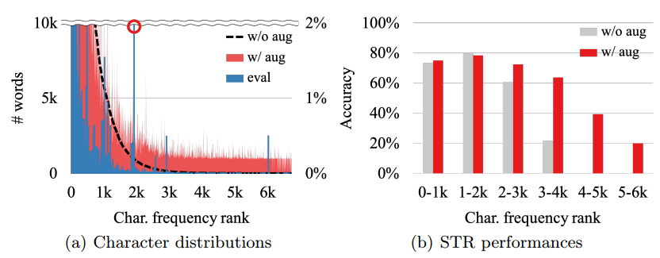

资源
全文
Abstract
对于成功的场景文本识别（STR）模型，合成文本图像生成器已经缓解了现实世界中注释文本图像的缺乏。具体来说，它们生成具有不同背景、字体样式和文本形状的多个文本图像，并使 STR 模型能够学习手动注释数据可能无法访问的视觉模式。
我们提出了两种技术来缓解训练数据的长度和特征分布中的长尾问题。在我们的实验中，Synthetiger 比合成数据集 MJSynth（MJ）和 SynthText（ST）的组合实现了更好的 STR 性能。我们的消融研究证明了使用 Synthetiger 子组件的好处，以及为 STR 模型生成合成文本图像的指南。
1 Introduction
Wild OCR 由两个子任务组成，即场景文本检测（STD）和场景文本识别（STR）。它们需要相似但不同的训练数据。
本文的重点是 STR 的合成数据生成，以解决单词框图像中文本外观的多样性。
有两种流行的合成引擎，MJ 和 ST。
- MJ 是一个文本图像合成引擎，通过处理字体渲染、边界/阴影渲染、基础着色、投影失真、自然数据混合和噪声注入等多个渲染模块来生成单词框图像。通过专注于生成单词框图像而不是场景文本图像，MJ 可以控制其渲染模块中使用的所有文本样式，如字体颜色和大小，但生成的单词框图像不能完全表示从真实场景图像中裁剪的文本区域。
- ST 生成在单个场景图像上包括多个单词框的场景文本图像。ST 通过处理字体渲染、边界/阴影渲染、基础着色和泊松图像编辑来识别文本区域并在区域上写入文本。由于单词框是从场景文本图像中裁剪出来的，所以所识别的单词框图像可以包括来自其他单词框的文本噪声，就像真实的 STR 示例一样。然而，在选择文本样式时存在一些限制，因为为文本呈现识别的背景区域可能与某些文本呈现功能不兼容（例如，太小而无法使用大字体）。
为了利用这两种方法，最近的 STR 研究简单地集成了 MJ 和 ST 生成的数据集。然而，简单的数据集成不仅增加了训练数据的总数，而且还会对两个合成引擎的共覆盖数据分布造成偏差。尽管整合提供了比个体更好的 STR 性能，但通过考虑将 MJ 和 ST 的优点结合起来的更好方法，仍有改进的空间。
{kind=link}

合成引擎生成的单词框图像。MJ 提供多种文本样式，但没有来自其他文本的噪音。ST 的示例是从包括多个文本框的场景文本图像中截取的，并且它们包括其他文本的某些部分。
尽管我们的合成引擎像 MJ 一样生成单词框图像，但它的示例包括在 ST 示例中观察到的文本噪声。
介绍了一种新的合成引擎，称为 Synthetic Text Image GEneratoR (SynthTIGER)，用于更好的 STR 模型。
-
与 MJ 一样，Synthetiger 生成的单词框图像没有 ST 的样式限制。
-
与 ST 一样，它采用了来自其他文本区域的额外噪声，这可能发生在从场景图像裁剪文本区域的过程中。
-
即使只使用了一个合成引擎，Synthetiger 也能提供与 MJ 和 ST 集成数据集相当的性能。
-
我们提出了两种方法来缓解不常用字符和短 / 长单词的数据分布偏斜。
- 先前的合成引擎通过从预定义的词典中随机采样目标文本来生成文本图像。
- 由于不常见的字符和非常短 / 长的单词的采样机会很低，经过训练的模型在这类单词上的表现往往很差。
本文提供了一个开源的合成引擎和一个新的合成数据集，该数据集显示出比 MJ 和 ST 组合数据集更好的 STR 性能。我们在与基线引擎公平比较的情况下进行的实验证明了 Synthetiger 的优越性。
此外，对渲染函数的深入研究描述了 Synthetiger 中的渲染过程如何有助于提高 STR 性能。
对长度和字符数据分布的实验表明了综合文本平衡的重要性。
Synthetiger 的官方实现是开源的，合成的数据集是公开的。
2 Related Work
在 STR 中，使用合成数据集已成为一种标准做法。
-
MJ 是 STR 最流行的数据生成算法之一（以及使用该方法生成的数据集）。它生成包含单个单词的图像补丁。
详细地说，该算法由六个阶段组成。
- 字体呈现阶段随机选择字体和字体属性，如大小、重量和下划线。
- 然后，它从预定义的词汇表中采样一个单词，并按照水平线或随机曲线在前景图像层上渲染它。
- 边界 / 阴影渲染阶段可以选择添加具有随机宽度的插入边界、开始边界或阴影图像层。
- 基础着色阶段用不同的颜色填充这些图像层。
- 投影失真阶段应用随机的全投影变换来模拟 3D 世界。
- 自然数据混合步骤将这些图像层与来自 ICDAR 2003 和 SVT 数据集的图像的随机采样裁剪混合。
- Noise 阶段向图像中注入各种噪声，例如模糊和 JPEG 压缩伪影。
虽然 MJ 可以生成足够有用的文本图像来训练 STR 模型，但尚不清楚每个阶段对其成功的贡献有多大。
用于场景文本检测（STD）的合成数据集可以通过从合成图像中裁剪文本区域来用于 STR。STD 数据生成算法与 STR 的主要区别在于，STD 必须考虑背景的几何形状才能创建逼真的图像。
然而，使用现成的分割技术进行文本背景对齐可能会产生错误的预测，并导致不切实际的文本图像。最近的研究，如 SynthText3D 和 UnrealText，通过使用 3D 图形引擎合成图像来解决这个问题。实验结果表明，在没有文本对齐错误的情况下，使用合成的文本图像可以显著提高文本检测性能。
然而，目前尚不清楚这些从虚拟 3D 世界生成的数据集是否有利于文本识别任务。
3 SynthTIGER
Synthetiger 由两个主要组件组成：文本选择和文本呈现模块。
- 文本选择模块用于从预定义的词典 L 中采样目标文本 t。
- 文本呈现模块通过使用多个字体 F、背景（纹理）B 和颜色图 C 来生成文本图像。
3.1 Text Rendering Process
合成的文本图像应该在单词框图像的微观视角和场景级文本图像的宏观视角中反映文本的真实性。Synthetiger 的渲染过程为微观层面的透视生成以文本为中心的图像，但它还适应了宏观层面透视的噪声。
{kind=link}

Synthetiger 渲染过程概述，包括
(a) text shape selection
- 决定一维字符序列的二维形状。该过程首先识别目标文本 t 的各个字符形状，然后以从左到右的顺序将它们呈现在 2D 空间上的某一行上。为了显示字符的视觉外观，从字体样式 F 的池中随机选择一种字体，并且每个字符都以随机选择的字体大小和厚度呈现在单独的板上。为了增加字体样式的多样性，将弹性失真应用于渲染的字符。
- 定义字符的空间顺序对于在二维空间上映射字符至关重要。对于纯文本，Synthetiger 基本上按从左到右的顺序排列字符板，字符板之间留有一定的空白。对于弯曲文本，Synthetiger 将字符板放置在抛物线上。
- 曲线的曲率由板中心之间的最大高度方向间隙确定。最大间隙是随机选择的，目标文本的中点被分配在抛物线的质心上。曲线上的字符板在一定概率下以曲线的斜率旋转。
(b) text style selection
-
选择文本的颜色和纹理，并注入额外的文本效果，如边框、阴影和挤出文本。
-
颜色映射 C 是对文本图像的颜色上的真实分布的估计。它可以通过对真实文本图像的颜色进行聚类来识别。它通常由 2 或 3 个具有平均灰度颜色及其标准差的聚类组成。MJ 和 ST 也分别使用 ICDAR03 数据集和 IIIT 数据集中确定的颜色图。
在我们的工作中，我们适应了 ST 中使用的颜色图。从颜色图中选择颜色是按照聚类和基于均值和 std 的颜色的顺序依次进行的。一旦选择了颜色，Synthetiger 就会改变角色外观的颜色。
-
现实世界中文本的颜色并不是简单地用一种颜色来表示的。Synthetiger 使用多个纹理源 B 来反映文本颜色的真实性。具体来说，它从 B 中拾取一个随机纹理，对纹理执行随机裁剪，并将其用作合成图像的文本外观的纹理。在这个过程中，纹理的透明度也是随机选择的，以使纹理的效果多样化。
-
-
在现实世界中，角色的边界根据文本风格、文本背景和环境条件呈现出不同的模式。我们可以通过应用文本边框、阴影和挤出效果来模拟边界样式。Synthetiger 随机选择其中一种效果并将其应用于文本。所有所需的参数，如效果大小和颜色，将从预定义的范围中随机采样。
(c) transformation
-
Synthetiger 通过利用多个变换函数生成反映这些特征的合成图像。
详细地说，Synthetiger 提供了拉伸、梯形、偏斜和旋转变换。它们的功能解释如下。
- 拉伸可调整文本图像的宽度或高度。
- 梯形选择文本图像的边缘，然后调整其长度。
- 倾斜将文本图像倾斜到四个方向之一，如右、左、上和下。
- 旋转可顺时针或逆时针旋转文本图像。
Synthetiger 将其中一个转换应用于具有随机采样的必要参数值的文本图像。
最后，Synthetiger 添加了随机边距，以模拟文本检测器的不同结果。边距分别应用于图像的顶部、底部、左侧和右侧。
(d) blending
- 混合过程首先通过从颜色图 C 和纹理数据库 B 中随机采样颜色和纹理来创建背景图像。它随机改变背景纹理的透明度，以使背景的影响多样化。
- 首先裁剪背景图像以匹配文本图像大小。
- 然后，它随机移动中间地带的噪声文本，并使非文本区域透明。最后，它通过使用多种混合方法之一来合并两个图像：普通、相乘、屏幕、叠加、硬光、柔光、躲避、除法、加法、差分、仅变暗和仅变亮。
- 最后一步是将前景文本图像覆盖在合并的背景上。具有小边距的目标文本区域保持不透明，以区分目标文本和噪声文本。在这个过程中，它还使用了上述混合方法之一。
- 由于几个原因，通过从（A）到（d）的这些步骤创建的合成图像可能不是好的文本聚焦图像。例如，它的文本和背景颜色恰好无法区分，因为它们是独立选择的。为了解决这个问题，我们采用了洪水填充算法。我们从目标文本内部的一个像素开始应用该算法，计算访问的文本边界像素的数量，并计算访问的边界像素与所有边界像素数量的比率。重复此过程，直到使用完所有目标文本像素。如果该比率超过某个阈值，则我们得出目标文本和背景无法区分的结论，并丢弃生成的图像。
(e) post-processing，视觉噪声被添加到组合图像上。
- 注入了一般的视觉噪声，如高斯噪声、高斯模糊、调整大小、中值模糊和 JPEG 压缩。
3.2 Text Selection Strategy
以前的方法，MJ 和 ST，从用户提供的词典中随机抽取目标文本。相比之下，Synthetiger 提供了两种额外的策略来控制合成数据集的文本长度分布和字符分布。它缓解了由于使用词典而遗留下来的长尾问题。
-
文本长度分布控制从词典中随机采样的文本的长度分布并不代表真实世界文本数据的真实分布。
为了缓解这个问题，Synthetiger 执行概率为 的文本长度分布扩充，其中 表示长度分布。
- 扩充过程首先在 1 和预定义的最大值之间随机选择目标文本长度。
- 然后，它从词典中随机抽取一个单词。如果单词与目标长度匹配，Synthetiger 会将其用作目标文本。
对于较长的单词，它只需剪掉多余的最右边的字符。对于较短的单词，它会对一个新单词进行采样，并将其附加到前一个单词的右侧，直到连接的单词匹配或超过目标长度。最右边的多余字符将被剪掉。
但是，应该谨慎使用文本长度增加，因为生成的文本大多是荒谬的。在实验部分，我们发现当 时，文本长度增加会使 STR 的准确率提高 以上，而当 时，差异很小。
-
字符分布控制语言（如中文和日语）使用大量字符。这种语言的合成数据集通常缺乏足够数量的稀有字符样本。为了解决这个问题，Synthetiger 用概率 进行字符分布扩充，其中 代表字符分布。当触发扩充时，它会从词汇表中随机选择一个字符，并对具有该字符的单词进行采样。在实验中，我们表明，在 0.25 和 0.5 之间增加 可以提高场景和文档域的 STR 性能。
4 Experimental Results
4.1 Experimental Settings
用于合成数据生成的资源 要构建合成数据集，需要多个资源 L、F、B 和 C。
- MJ 和 ST 是用自己的资源建立起来的。
- MJ 使用了一个结合了 Hunspell 语料库 4 和来自 ICDAR（IC）、SVT 和 IIIT 数据集的真实 STR 实例的基本事实的词典。MJ 还使用 IC03 和 SVT 的纹理及其颜色图。
- ST 不使用除了来自 IIIT 的彩色图之外的地面实况信息。
- Synthetiger 使用由 MJ 和 ST 数据集的文本组成的词典，并使用与 ST 相同的纹理和颜色图。
- 它们有不同数量的字体，可以从 Google Fonts 中获得。
- 表中的 Common* 使用维基百科中的另一个词典来评估除了颜色图之外的所有没有真实 STR 测试示例和测试集的基本事实信息的合成引擎。对于我们的日语 STR 任务，我们使用维基百科和推特上的日语词典（84M）、382 种字体、BST 和 CST。
Common* 表示在合成引擎之间进行 apples-to-apples（比较两个相同类别的事）比较的设置
"×3”表示大写、大写和小写单词的文本扩充。
| Lexicon (L) | Font (F) | Texture (B) | Color map (C) | |
|---|---|---|---|---|
| MJ | Hunspell + test-sets of IC, SVT, IIIT (90K×3) | 1400 fonts | IC03, SVT train-set (358) | IC03 train-set |
| ST | Newsgroup20 (366K) | 1200 fonts | Crawing(8010) | IIIT word dataset |
| SynthTIGER | MJ + ST (197K×3) | 3568 fonts | ||
| Commom* | Wikipedia (19M×3) |
训练和评估 STR 模型的实验设置在本文中，我们通过用它们训练 STR 模型并在真实的 STR 实例上评估训练的模型来评估合成数据集。我们选择 BEST 作为我们的基本模型，因为它通常被使用，而且它的实现是公开的。为我们的实验构建的所有合成数据集都由 1000 万个单词框图像组成。公共数据集 MJ 和 ST 分别包含 890 万和 700 万个单词框图像，它们也使用相同的过程进行评估。
BEST 模型仅使用合成数据集进行训练。培训和评估是通过 STR 测试进行的。除了输入图像大小为 之外，大多数实验设置都遵循 Baek 等人的训练协议。
我们根据语言测试了两种 STR 场景：一种是拉丁语，另一种是日语。
4.2 Comparison on Synthetic Text Data
{kind=link}

4.3 Comparison on Synthetic Text Image Generators with Same Resources
{kind=link}

引擎的输出取决于字体、纹理、颜色图和词典等资源，我们通过在表 3 中设置相同的资源来提供公平的比较，称为“*”。为了进行公平的比较，我们将比较数据的总量设置为 10M。
4.4 Ablative Studies on Rendering Functions
消融实验。
（-）表示排除在基线之外。颜色排除表示使用随机颜色选择，混合排除表示使用“正常”混合
{kind=link}

4.5 Experiments on Text Selection
文本长度分布控制实验如图所示。如图 5（a）所示，我们发现拉丁语训练数据中的长短文本不足以覆盖真实世界的文本，并且训练数据和评估数据之间的长度分布也大不相同。为了缓解这些问题，我们将文本长度分布扩充应用于拉丁语，因此，扩充分布可以以红色图的形式覆盖广泛的长度文本。
{kind=link}

(b) 不增加长度的模型（虚线）、应用 50%的模型（红色）和根据评估数据的长度分布优化的增加长度模型（蓝色）的长度精度。长文本的蓝线急剧下降，因为评估数据集中很少存在超过 15 个字符的文本。
| Probability | 0% | 25% | 50% | 75% | 100% | Optimized |
|---|---|---|---|---|---|---|
| Accuracy | 82.1 | 83.9 | 84.2 | 82.7 | 82.0 | 84.9 |
字符分布控制实验如图 6(a) 所示，由数千个字符组成的日语字符存在不平衡长尾问题。
{kind=link}

5 Conclusion
本文通过为 STR 引入一种新的合成引擎 SynthTIGER 来解决这些问题。与现有的合成数据集相比
- SynthTIGER 仅显示出更好或可比的性能，并且其渲染功能在公平的比较下进行了评估。
- Synthetiger 还通过提供两种长度和字符的文本选择方法，解决了合成数据集文本分布的偏差。
我们在渲染方法和文本分布方面的实验表明，控制合成数据集的文本样式和文本分布会影响学习更具普遍性的 STR 模型。最后，本文通过提供一个开源的合成引擎和一个新的合成数据集，为 OCR 社区做出了贡献。